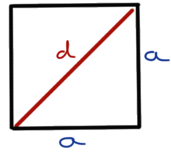
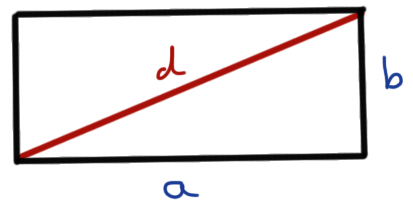
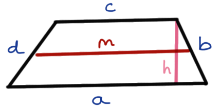
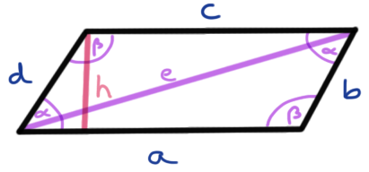
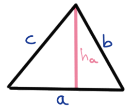
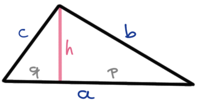
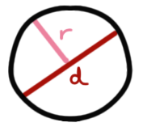

4 Flächenberechung
Version vom October 14, 2022 um 16:08:03

\(F\) = Fläche
\(U\) = Umfang
4.1 Quadrat

\[ F = a \cdot a = a^2 \]
\[ U = 4 \cdot a \]
\[ d = a \sqrt{2} = \sqrt{2\cdot a ^2} \]
4.2 Rechteck

Beachte auch folgenden Zusammenhang für das Rechteck:
\[ a = \cfrac{F}{b} = \cfrac{U - 2b}{2} \]
\[ b = \cfrac{F}{a} = \cfrac{U - 2a}{2} \]
\[ F = a \cdot b \]
\[ U = 2 \cdot a + 2 \cdot b = a (a+b) \]
\[ d = \sqrt{a^2 + b^2} \]
4.3 Trapez

Beachte auch folgenden Zusammenhang für das Trapez:
\[ a = \cfrac{2F}{h}-b \]
\[ b = \cfrac{2F}{h}-a \]
\[ c = U - (a+b+d) \]
\[ d = U - (a+b+c) \]
\[ F = m \cdot h = \cfrac{a+b}{2}\cdot h \]
\[ U = a+b+c+d \]
4.4 Parallelogramm

Beachte auch folgenden Zusammenhang für das Parallelogramm:
\[ a = \cfrac{2F}{h} \]
\[ b = \cfrac{U-2a}{2} \]
\[ F = a \cdot h \]
\[ U = 2(a+b) \]
4.5 Dreieck

\[ F = \cfrac{c \cdot h_c}{2} \]
\[ U = a + b + c \]
\[ h_c = \cfrac{2 \cdot F}{c} \]

Bei einem rechtwinkligen Dreieck gilt
\[ a^2 + b^2 = c^2 \]
\[ \begin{aligned} a^2 &= c^2 - b1^2\\ b^2 &= c^2 - a^2\\ c^2 &= a^2 + b^2\\ h^2 &= b^2 - q^2\\ h^2 &= a^2 - p^2 \end{aligned} \]
4.6 Kreis

\[ F = r^2 \cdot \pi = \cfrac{d^2 \cdot \pi}{4} \]
\[ U = 2r \cdot \pi = \cfrac{d \cdot \pi}{4 \cdot F} \]
\[ d = 2r \]
\[ r = \cfrac{U}{2 \cdot \pi} \]